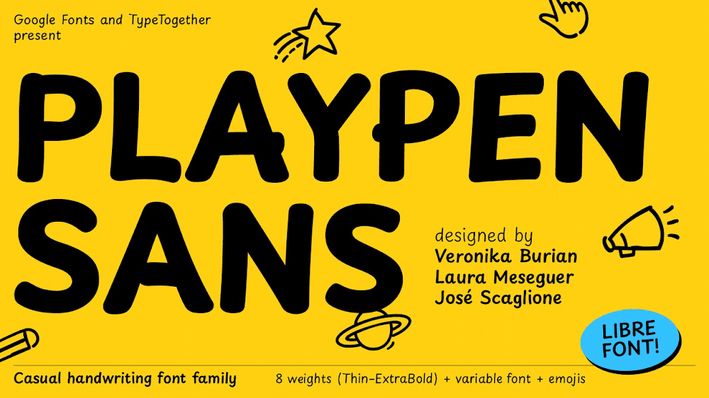
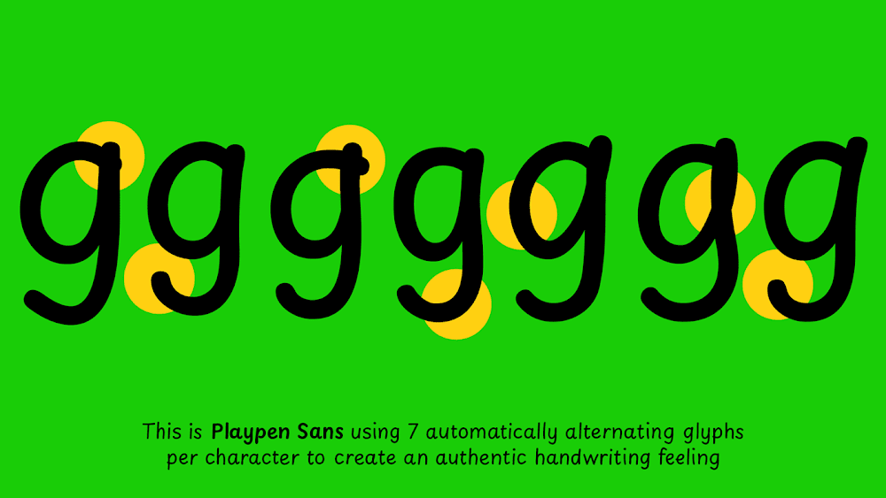
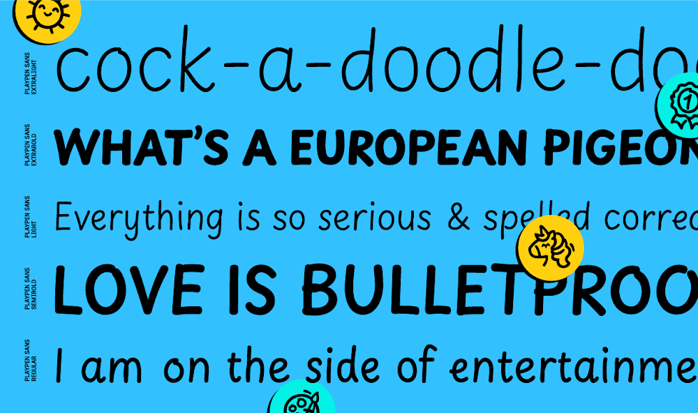
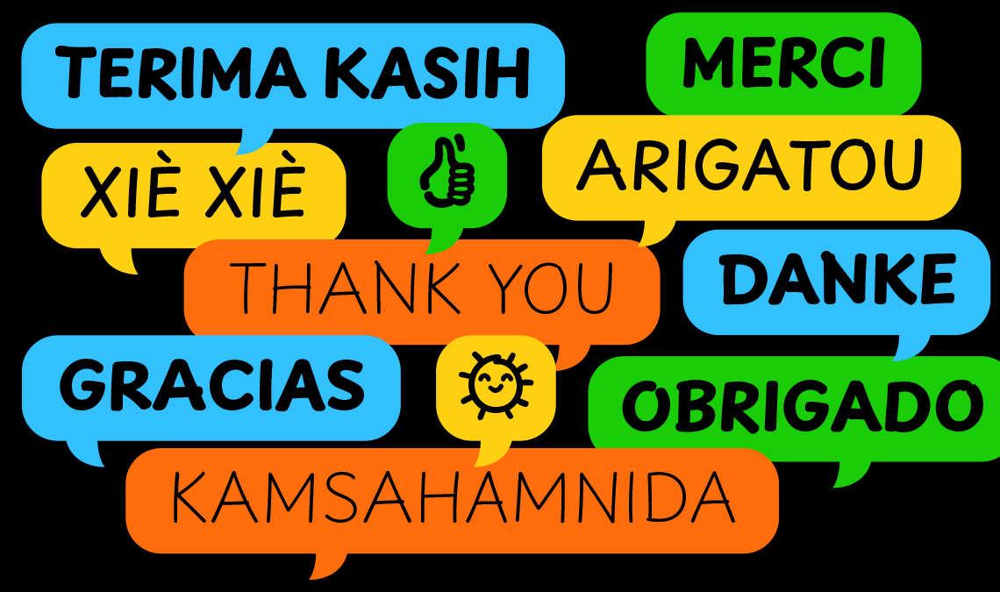
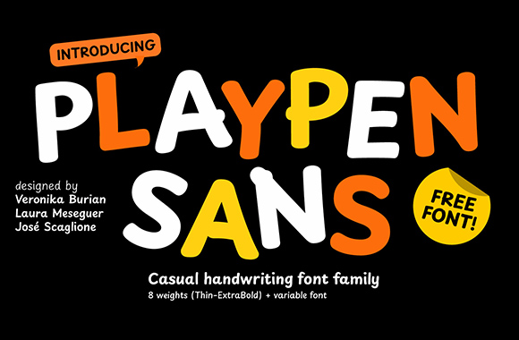

Available in eight weights, Playpen Sans includes cheerful and comforting emojis and supports over 150 Latin languages. Designed for non-creative users, this family brightens up brief, informal communications: greeting cards and invitations, informal signs and documents, and of course, children’s books, educational materials, comics, and graphic novels.
The goal of a font that combines a relaxed look with a deeply digital nature is to achieve human authenticity within the confines of digital reproduction.




